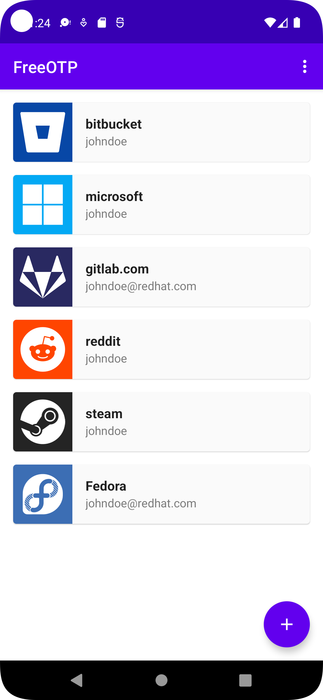
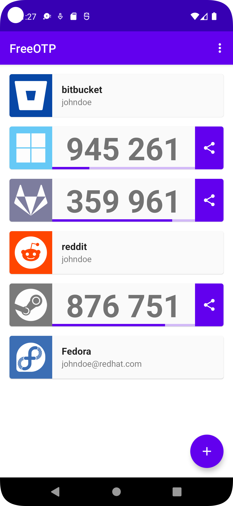

换新手机那天我差点把账号锁死——FreeOTP 无云同步的惊魂一课
刚换完新手机，两台机器同时出码搞混了，连续输错被网站限流。翻了 FreeOTP 的文档才明白，无云同步不是缺陷，是它选择的安全哲学。
两台手机同时出码的那个下午
上个月换了台 Android 新机，折腾了一下午把常用应用都装好了。FreeOTP 我是从 F-Droid 装的，FreeOTP下载也列了正规渠道来源，Google 自动备份居然帮我把令牌也恢复了——当时还挺开心，觉得"现在的应用真贴心"。
然后旧手机也没卸 FreeOTP，就那么放着，想等新机用几天稳定了再说。
第二天早上登录 GitHub，像往常一样掏出手机出码。输完六个数字——"验证失败"。再看进度条，刚刷新了，等它走完再输一次——还是错。第三次，GitHub 直接弹出了"连续多次验证失败，请稍后重试"。
我愣了一下，然后看见旧手机屏幕也亮着——它也在出同一个 GitHub 的码。两台手机、两个一模一样的令牌、同时刷新、同时出码。我昨天到底输的是哪台的？不确定了。
更糟的是 Gmail 也被锁了——那边是真的锁，恢复代码早就不知道丢哪了，翻了半天才在密码管理器的一个废弃条目里找到。
它为什么不做云同步
平复下来之后我去 FreeOTP 的官网翻了一下。原来"无云同步"从一开始就是设计好的——不是 Red Hat 没工夫加，是故意不加。文档里写得清楚：如果令牌上云，那云服务本身就成了单点故障。你信不过的厂商泄露一次，所有两步验证形同虚设。
这个逻辑我其实能想通——但"自动备份帮我恢复了"这件事本身就让我踩了坑。Google 的 Android 备份会把应用的本地数据打包到云端，而 FreeOTP 把令牌存在本地 encrypted storage 里。所以在"无云同步"的大原则下，它仍然会被系统级的备份机制带上云。这不是它的本意，但现实就是这样。
重新走一遍完整搬家剧本
FreeOTP文档里有一篇换机迁移的四幕流程，我当时是跳着做的。这次老老实实从头走：
第一幕是旧手机上。先确认主密码还记得——之前设了个 16 位的，还好密码管理器里存了。然后手动做了一次 XML 备份，存到本地，再上传到网盘一份以备不时之需。最关键的一步是清点恢复代码：GitHub、Gmail、Dropbox 这几个重要账户的恢复代码，密码管理器里有没有全？缺了的当天就去各自网站重新生成了一遍。
第二幕新机安装恢复。这次我用手动文件恢复，不再依赖 Google 自动备份——把旧机导出的 XML 拷到新机，在 FreeOTP 里点 Restore 选它，输主密码，令牌列表完整出来了。那一刻盯着那个熟悉的绿色图标矩阵，比昨天自动恢复成功还要踏实。

第三幕逐站验证。文档特意强调"不要跳"，我以前觉得这是啰嗦。但经历了昨天的输错事件之后，我老老实实挨个试：GitHub 登录 → 新机出码 → 通过；Gmail → 通过；SSH 服务器 → 通过。三个全过才松了口气。
第四幕旧机收尾。新机稳定用了三天，确认每个网站的登录都没问题了，回到旧机，逐个删除 FreeOTP 里的令牌——不是卸载应用，是删令牌本身。卸载可能会留残留数据，删令牌才是真的干净。然后退掉 Google 账号，恢复出厂设置。
码不对时该先做什么
搬家之后还有个小插曲：有天深夜登录 Gitee，码突然就不对了。那个时间点我困得很，差点把恢复代码用掉。想起来文档里有个"验证码总排查"，按命中率排的七步，我按顺序试：
第一步，对时间。手机时钟自动设置本来就是开的，但关了再开一次之后，再出码——对了。文档说 TOTP 按时间算码，手机时钟哪怕只漂 30 秒，所有令牌一起错。这个修好了就行，不用重绑。
后来又遇到过一次"码看起来正常但网站说不对"，这次是第三步——用错了账户。FreeOTP 里我有两三个 GitHub 相关的令牌（工作的、个人的），图标都是猫的剪影，颜色还差不多。令牌卡片上的副标题就是账户名，出码前扫一眼那行小字的习惯，我现在每次都做。

开源到底给了我什么
FreeOTP 是 Apache 2.0 许可证开源的，Android 和 iOS 代码分两个仓库放在 GitHub 的 freeotp 组织下，Red Hat 赞助维护。说实话我看不懂代码，但"开源"这件事让我觉得靠谱——它说"不收集任何数据"，不是厂商宣传语，是任何人可以去扒代码验证的事实。
这也是我最终选它而不是 Google Authenticator 的原因之一。GA 现在也支持云同步了，但我真的不希望自己的两步验证密钥跟着任何厂商的云服务走。
最后
那次换机折腾之后，我养成了三个习惯：每三个月手动做一次 XML 备份；恢复代码永远和密码管理器里的账户条目放在一起；每次出码前先扫一眼副标题确认账户名。
FreeOTP 的体验说不上惊艳——界面朴素，没有云同步，没有花哨的分组和标签功能。但它在安全这件事上的态度是认真的，每一个设计决策背后都有明确的取舍理由。对我来说，两步验证器的核心功能就是"出对码"，这一点它做得很好。
这次搬家的教训也算值了——把文档里该看的部分都翻了一遍，比当年绑完所有令牌就再也没打开过 App 的状态靠谱多了。FreeOTP 的中文资料我也维护了三份：GitHub 是主仓库，Gitee 走国内线路更快，GitCode 留作备份镜像。